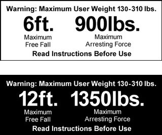

21.I Personal Fall Protection Systems
21.I.07
21.I.07 PFAS – Connecting Means. Connecting subsystems may include energy absorbing lanyards (shock absorbing lanyards) with snap hooks or carabiners at each end, self-retracting devices (SRDs), and/or fall arrestors (rope grabs).
- Lanyards - General. Lanyards shall be made of ropes, straps or webbing made from synthetic materials. Energy absorbing lanyards, (including rip stitch/tearing and deforming lanyards) shall be capable o sustaining a minimum tensile load of 5,000 lbs (22.2 kN). The maximum length of single or "Y" lanyards used in fall arrest shall not exceed 6 ft (1.8 m).
- The 6 ft (1.8 m) Free Fall (FF) energy absorbing lanyard shall only be used when the tie-off point is above the dorsal D-ring creating a FF distance of less than 6 ft. The energy absorber shall have an average arrest force of 900 lbs (4 kN) and a maximum deployment distance of 4 ft (1.2 m). > See ANSI Z359.13, Par 3.1.8.1.
- When an anchor point is below the dorsal D-ring, a FF distance greater than 6 ft (1.8 m) is created. For these situations, a 12 ft (3.6 m) FF energy absorbing lanyard shall be used in accordance with manufacturer's instructions and recommendations. The energy absorber shall have an average arrest force of 1,350 lbs (6 kN) and the maximum deployment distance of 5 ft (1.5 m). > See ANSI Z359.13, Par 3.1.8.2.
▸Note: A 12 ft (3.6 m) FF energy absorbing lanyard does not refer to the lanyard length. Instead it refers to a FF that is greater than 6 ft (1.8 m) up to 12 ft which is created by the anchor point being located below the dorsal D-ring. The maximum length of the lanyard used shall not exceed 6 ft. > See Figure 21-4.
- The 6 ft (1.8 m) and 12 ft (3.6 m) FF energy absorbing lanyards shall meet the requirements of ANSI Z359.13 Standard.
▸Note: Lanyards shall not be looped back over or through an object and then attached back to themselves unless permitted by the manufacturer.
- "Y" Lanyards. When using lanyard with two integrally connected legs for 100% tie-off, attach only the snap hook at the center of the lanyard shall be attached to the fall arrest attachment element of the harness (D-ring).
- The two legs of the lanyard and the joint between the legs shall withstand a force of 5,000 lbs (22.2 kN).
- When one leg of the lanyard is attached to the anchorage, the unused leg of the lanyard shall not be attached to any part of the harness except to attachment points specifically designated by the manufacturer for this purpose.
FIGURE 21-4
6 ft Free Fall and 12 ft Free Fall Energy Absorbing Lanyard Labels

- The 6 ft (1.8 M) FF "Y" lanyard shall only be used when the tie-off point is above the dorsal D-ring height and when the FF distance is less than 6 ft.
- When the tie-off point is located below the dorsal D-ring, the FF distance is greater than 6 ft (1.8 m) so a 12 ft (3.6 m) FF "Y" lanyard may be used.
▸Note: A 12 ft (3.6 m) FF energy absorbing "Y" lanyard does not refer to the lanyard length. Instead it refers to a FF that is greater than 6 ft (1.8 m) up to 12 ft which is created by the anchor point being located below the dorsal D-ring. The maximum length used shall not exceed 6 ft.
- The maximum arrest force on the body shall not exceed 1800 lbs (8 kN).
- The 6 ft (1.8 m) and 12 ft (3.6 m) FF energy absorbing "Y" lanyards shall meet ANSI/ASSE Z359.13 standard.
▸Note: Effective 2 years from date of publication, all energy absorbers used shall be equipped with a deployment indicator.
- Hardware (connecting components).
- Snap hooks and carabiners shall be self-closing and self-locking, capable of being opened only by at least two consecutive deliberate actions. Snap hooks and carabiners having minimum gate strength of 3,600 lbs (16 kN) in all directions, per ANSI Z359.12 shall be used.
- Snap hooks and carabiners shall have a minimum tensile strength of 5,000 lbs (22.2 kN); D-rings, O-rings, snap hooks and carabiners shall be capable of withstanding a tensile load of 5,000 lbs.
- Connectors, adjusters, and any buckles used as adjusters shall be capable of withstanding a minimum tensile load of 3,372 lbs (15 kN) and shall be made of drop forged, pressed or formed steel, or made of equivalent materials; shall have corrosion resistant finish; and all surfaces and edges shall be smooth to prevent damage to interfacing parts of the system.
- All connecting components used in PFAS shall be compatible and shall be used properly.
- Self-Retracting Devices (SRDs). The SRDs shall meet the requirements of the ANSI/ASSE Z359.14 standard.
- A Self-retracting lanyard (SRL) is a device mounted or anchored such that the arrest distance shall not exceed 2 ft (60 cm), and the average arrest force shall not exceed 1,350 lbs (6 kN) or a maximum peak force of 1,800 lbs (8 kN). The SRL is only used for vertical applications.
- An SRL with leading edge capability (SRL-LE) is designed for applications where during use, the device is not necessarily mounted or anchored overhead and may be at foot level and where the possible free fall distance from the edge is up to 5 ft (1.5 m) and the average arrest distance shall not exceed 4.5 ft (1.37 m). The device is equipped with an energy absorber to withstand impact loading of the line with a sharp or abrasive edge during fall arrest and for controlling fall arrest forces on the worker.
▸Note: Effective 2 years from date of publication, all SRDs used shall be equipped with visual indicator.
- Fall arrestors (rope grabs) designed to be used with a vertical lifeline and ladder climbing devices (rope, cable or rail) shall be approved by the manufacturer for such use. Fall arresters shall have a minimum ultimate strength of 3,600 lbs (16 kN).
▸Note: For vertical lifelines or ladder climbing devices, use the automatic fall arrestors that move in one direction only.
{kind=link}